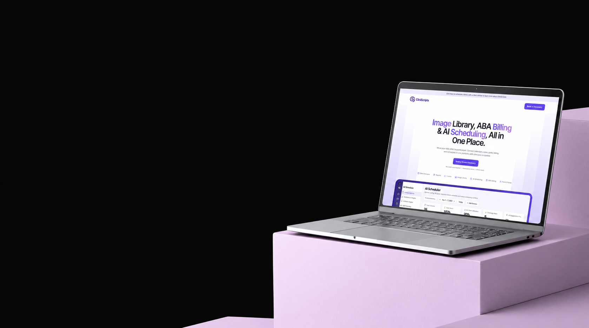

Bring relevant history and next actions into the moment of care.

CliniScripts · AI-enabled EMR
From an AI scribe to one connected clinical platform.
I helped evolve CliniScripts beyond documentation into a broader EMR experience that connects care delivery, scheduling, billing and clinical resources.
Role
Product Designer
Domain
AI healthcare · EMR · Practice operations
Scope
Web product, interaction patterns and responsive states
Partners
Product, engineering, clinicians, leadership and client teams
Inside the platform
Two focused stories. One connected clinical system.
Each case study isolates a substantial product problem while keeping its relationship to the wider CliniScripts platform visible.
01A · AI interactionAI clinical documentation
Designing an editable, human-reviewed path from clinical input to approved documentation.
Open case study ↗ 01B · OperationsIntelligent schedulingTurning availability, credentials and continuity constraints into explainable recommendations.
Open case study ↗01 · Problem
Clinical teams need speed without losing context or control.
Documentation, client history, follow-ups and scheduling often live across disconnected steps. Clinicians need to move quickly, but AI-assisted decisions must remain understandable, editable and accountable. The product had to serve clinicians and administrators while keeping consequential information easy to scan and act on.
Make generated output reviewable instead of presenting it as a final answer.
Support roles, skills, availability and clinic-level constraints.
02 · Process
I translate stakeholder inputs into flows the team can test and ship.
Gather
Join client and internal discussions, clarify the request and document clinical, business and technical requirements.
Prioritize
Separate immediate needs from later opportunities and maintain a practical feature backlog with the team.
Prototype
Map tasks and states, then move from low-fidelity flows to high-fidelity and functional prototypes.
Ship and QA
Work with engineering through implementation, review responsive behaviour and refine the experience from feedback.
Flow 01 · Capture to documentation
Start from the clinician’s real working context.
Four entry modes let clinicians begin with an in-person session, telehealth visit, direct dictation or uploaded files. The interaction model keeps AI assistance downstream of the clinical encounter, not in the way of it.
Capture a live clinical session.
Document a remote appointment.
Turn a spoken recap into a draft.
Convert source material into notes.
Clinical input→AI-organized draft→Clinician review→Approved record
Flow 02 · Longitudinal client context
One workspace, with the next decision brought forward.
The client workspace connects profile details, pre-visit context, session history, appointments, billing, files, care programs, behaviours and the care team. A structured pre-visit summary surfaces active issues, recent changes and follow-ups while retaining source visibility and clinician control.
Flow 03 · Explainable AI scheduling
Recommendations grounded in real constraints.
The matching workflow combines client, time, location, required credential, specialty and session type. Clinic rules add supervision ratios, utilization targets, overtime policy and continuity preferences so a recommendation can reflect operational reality.
Flow 04 · Clinic operations
Administrative power without turning the product into a wall of controls.
Clinic administrators can manage practitioners, permissions, templates, scheduling rules, billing and audit activity. I used consistent page anatomy, progressive disclosure and reusable components to make dense operational tools easier to learn.
03 · Execution & contribution
Product thinking through implementation, not just handoff.
- Client calls and requirement documentation
- Workflow mapping and feature prioritization
- Responsive user flows and high-fidelity UI
- Functional and AI-assisted prototyping
- Human-in-the-loop interaction patterns
- Reusable components and design consistency
- Engineering collaboration and implementation review
- Product QA, feedback and iterative refinement
Design evidence
A coherent system spanning care delivery, documentation and clinic operations.
The scope demonstrates systems thinking across clinical and administrative roles while keeping AI-assisted decisions visible, reviewable and grounded in human judgment.
Next case study
Designing from behaviour 02